Scope
2026A Gen Z cultural platform imagined as one AI-native brand world. Identity, music, fashion, and digital drops. Made with GPT Image 2.
A branding exploration imagining a Gen Z cultural platform where identity, creators, events, fashion, music, and digital expression come together. The project experiments with how one AI-native brand world can extend across campaign visuals, interface fragments, editorial layouts, and cultural drops. Made with GPT Image 2.
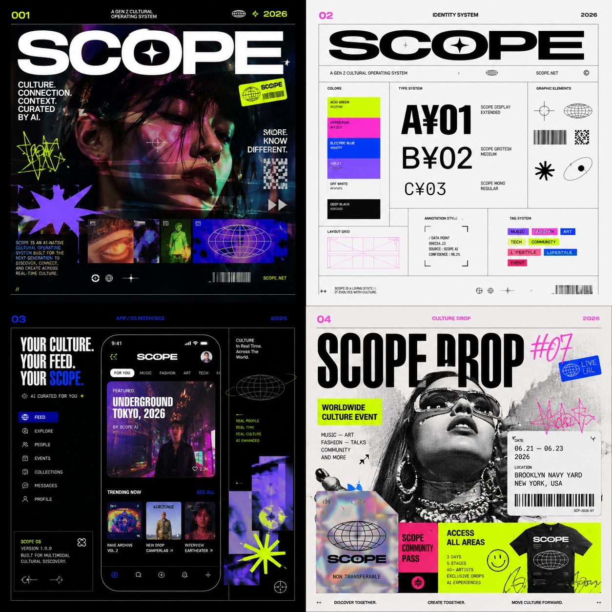
Octocrab
2026An octagonal crab drawn in ASCII. Glyphs and dither become pearl armor, neon claws, and a glowing core. Made with GPT Image 2.
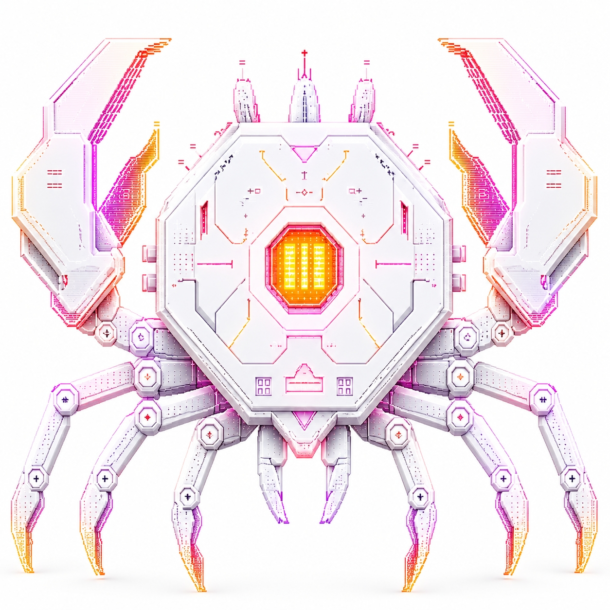
The Rib
2026Creation begins with separation. In this retelling of Genesis, one whole becomes two equals, and distance makes loss possible. Only when there is an “I” and a “you” can there be someone to love. Made with GPT Image 2.5.
Creation begins with separation. Drawn from Genesis, the work captures the moment one whole becomes two equals, each with a form and presence of its own. The distance between them brings loneliness, vulnerability, and the possibility of loss, but it also makes connection possible. Only when there is an “I” and a “you” can there be someone to love. Made with GPT Image 2.5.
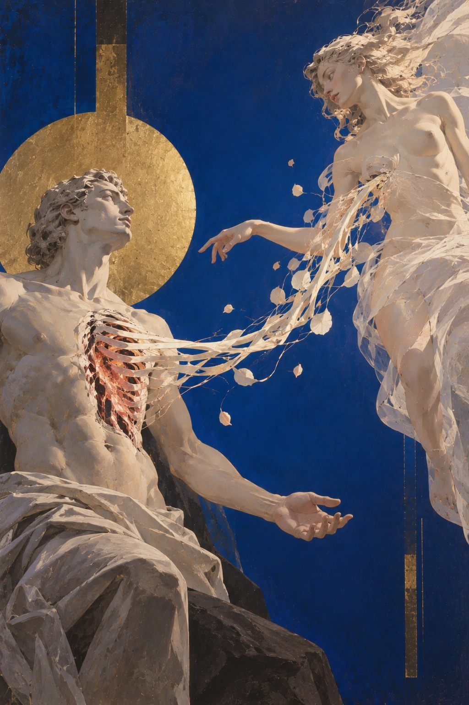
Midjourney
2026Exploring different visual styles, moods, and worlds through prompt-driven image and video generation in Midjourney.
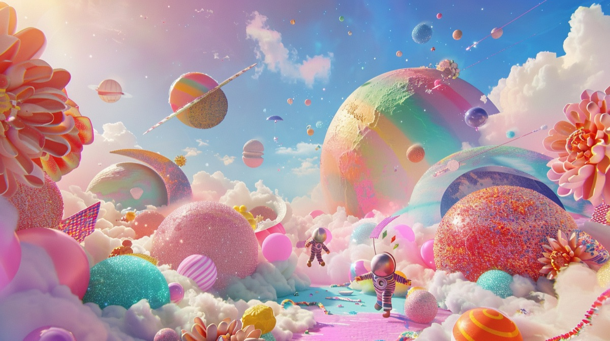
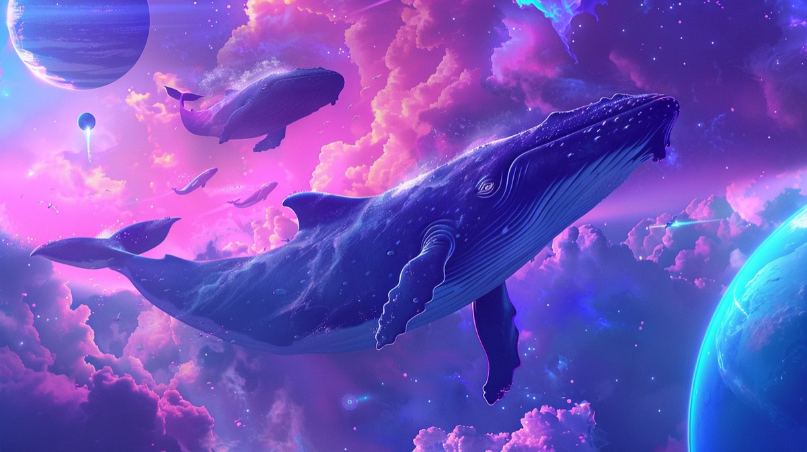
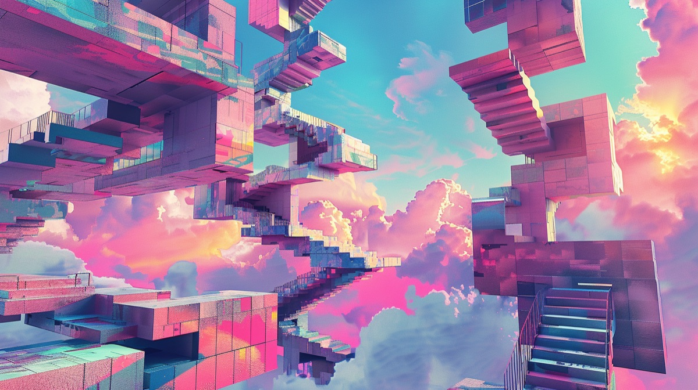
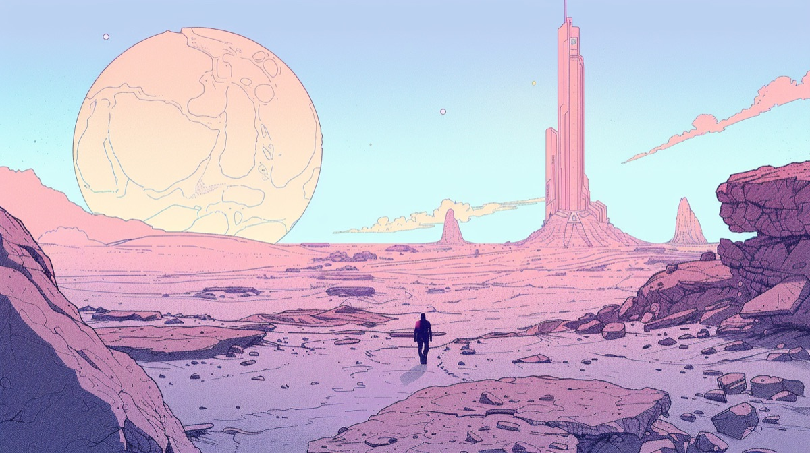
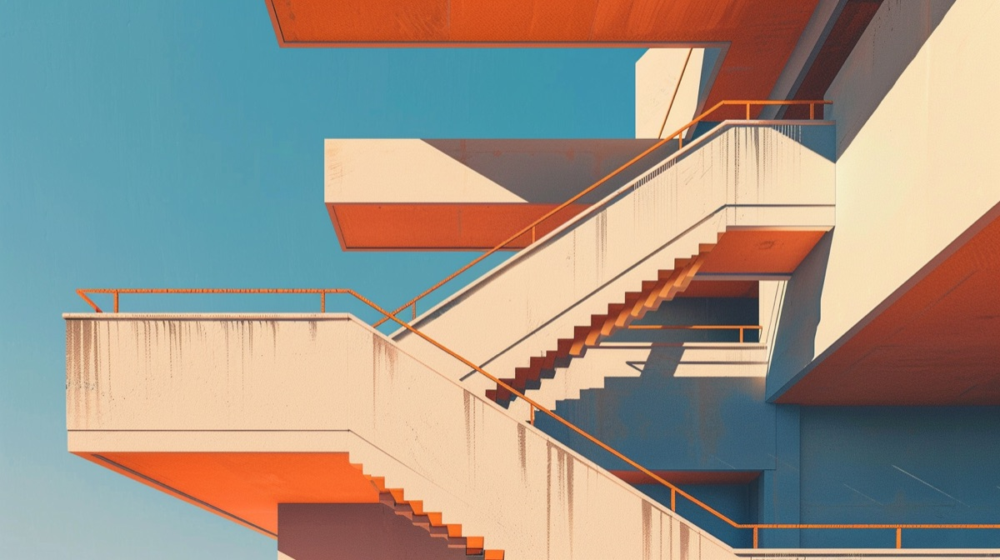
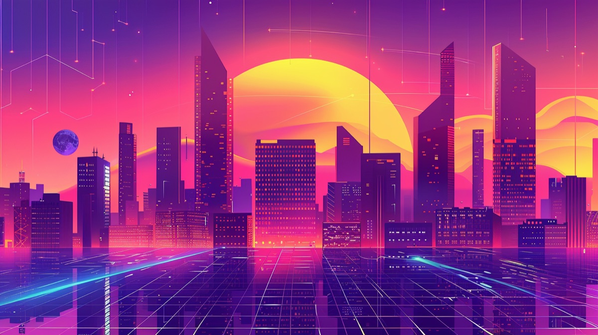
Luma
2026A solo concept exploring how neuroaesthetic interaction can support emotional regulation. A trauma-informed, nonverbal alternative to conventional wellness apps, inspired by Your Brain on Art. Made with Claude Code.
Solo concept project exploring how neuroaesthetic interaction can support emotional regulation through art-based rituals. Inspired by Your Brain on Art, it uses body mapping, abstract visual expression, and sensory check-ins to help users externalize difficult feelings in a private, nonverbal way. A trauma-informed concept focused on calm interaction, emotional safety, and a more poetic alternative to conventional wellness apps. Made with Claude Code.
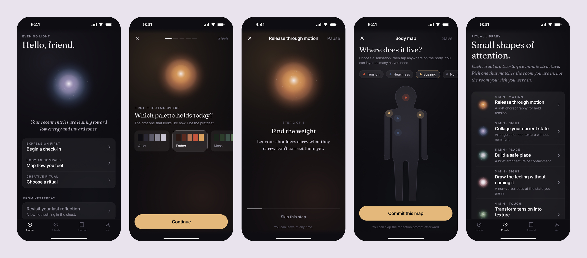
Robot Operator Console
2026Sitting at the console of a working robot. A humanoid runs a warehouse pick-and-place loop while the control interface reads its vitals: battery, joint load, gait stability, alarms that wait to be acknowledged. Watch from above, through its eyes, or in VR. Made with Unity MCP and Claude Code.
Solo project built in Unity, exploring what it feels like to sit at the console of a working robot. A humanoid runs a warehouse pick-and-place loop: approach, grasp, lift, carry, place, return. An industrial control interface reads its vitals: battery, joint load, gait stability, alarms that flash red and wait to be acknowledged. Watch from above, through the robot's own eyes, or free-flying in VR. Made with Unity MCP and Claude Code.
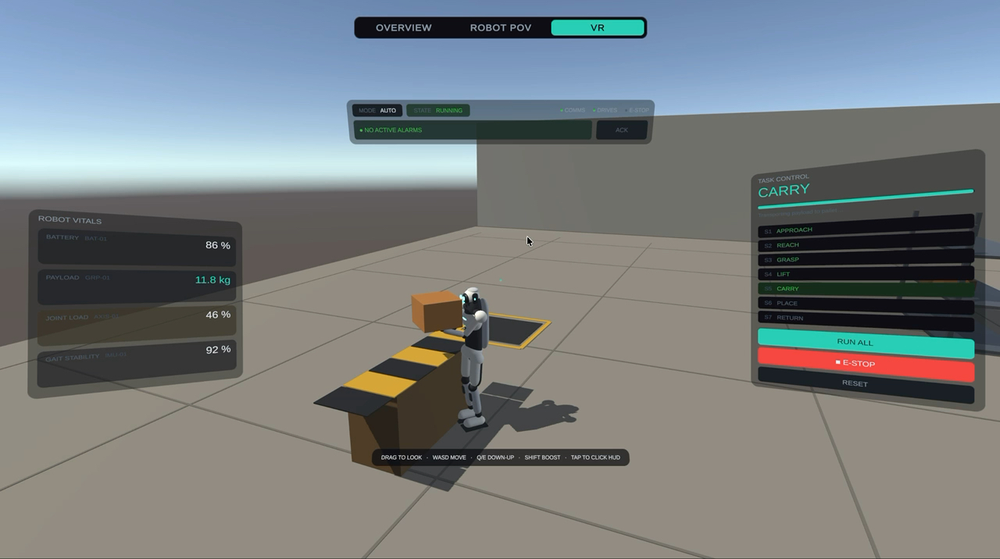
New Craft Society
2026A home for design process, not just finished pieces. Drop in rough work as it happens and the case study writes itself. Freelance, in active development: I am both a designer on it and one of the product engineers building it.
Visit the site ↗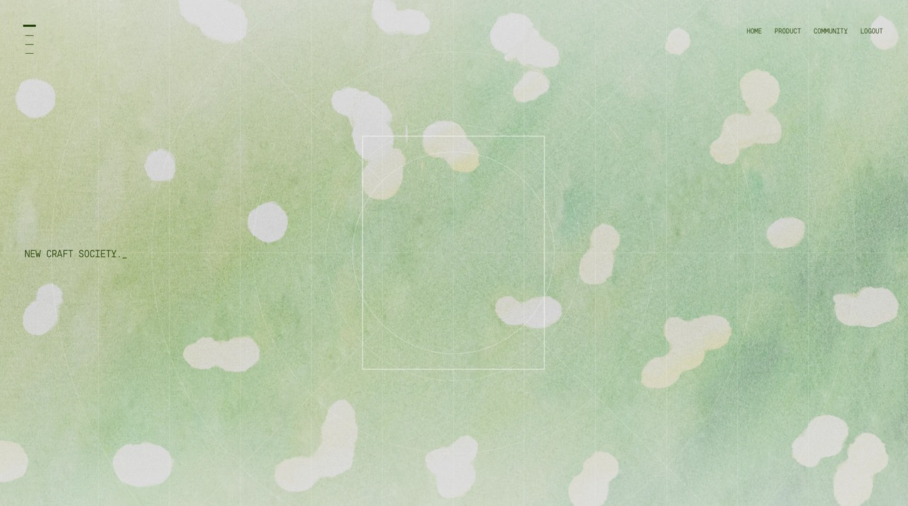
TickerPulse
2025An AI trading terminal that monitors real-time news sentiment and explains the why behind every alert, not just the what. It filters market noise down to portfolio-relevant moves, backs every verdict with linked evidence, and surfaces the catalyst before the move is over.
An AI trading terminal that monitors real-time news sentiment and explains the why behind every alert, not just the what. Built for active and part-time traders, it filters market noise down to portfolio-relevant moves and backs every verdict with linked evidence, so they can act on the catalyst before the move is over.


Market Street Booklet Kit
2025Exhibited at SF's Ferry Building and reviewed by a jury that included Jony Ive. An interactive booklet of maps, stamps, and coupons for ULI San Francisco's Market Street Reimagined competition, built to revive foot traffic and support local businesses.
CCA team project for ULI San Francisco's Market Street Reimagined competition. Designed to revive foot traffic and support local businesses, the interactive booklet used maps, stamps, and coupons to guide people through Market Street landmarks. Exhibited at the Ferry Building (July 23 – Aug 8, 2025) and reviewed by a jury that included Jony Ive.
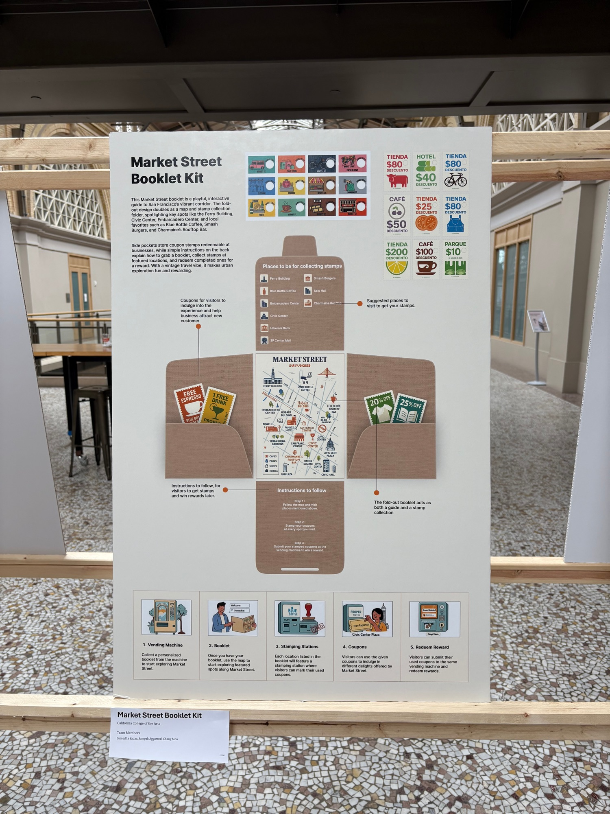
Missing Pavilion
2021A parametric pavilion of wave-like metal and semi-transparent glass, sited at a park pathway intersection and built around light, water, and quiet. Made in Rhino and Grasshopper.
Solo project designing an 8x12m parametric pavilion, featuring a wave-like structure of metal and semi-transparent glass. Positioned at a pathway intersection, it enhances the park experience with light, water play, and a serene space for relaxation and socializing. Made in Rhino and Grasshopper.
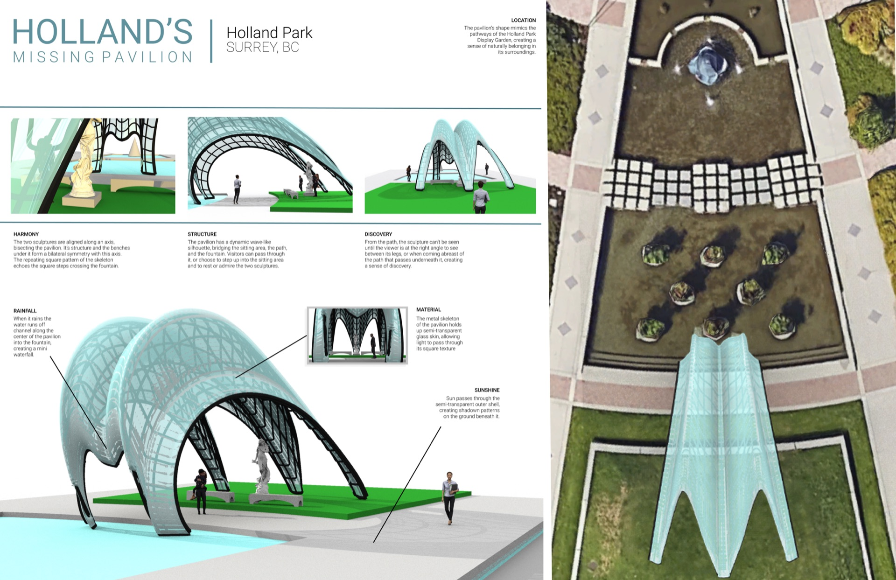
UN/FOLD
2020A team 3D adventure built in Unity. As game designer, I shaped levels and mechanics where players shapeshift between humans, wolves, and seagulls to solve puzzles.
A team developed 3D adventure game built in Unity, featuring puzzles, platforming, and a fantasy world. As the game designer, I focused on the setting, level design, and mechanics, allowing players to shapeshift into humans, wolves, and seagulls to solve challenges creatively.
The Last Human Gestures
2026A future archive of irreplaceable human behavior. Hesitation, waiting, wandering, and daydreaming reframed as qualities worth preserving in the age of AI. Made with GPT Image 2.
A future archive of irreplaceable human behavior in the age of AI. As efficiency, optimization, and productivity become automated, this poster reframes hesitation, waiting, wandering, and daydreaming as human qualities worth preserving. Made with GPT Image 2.
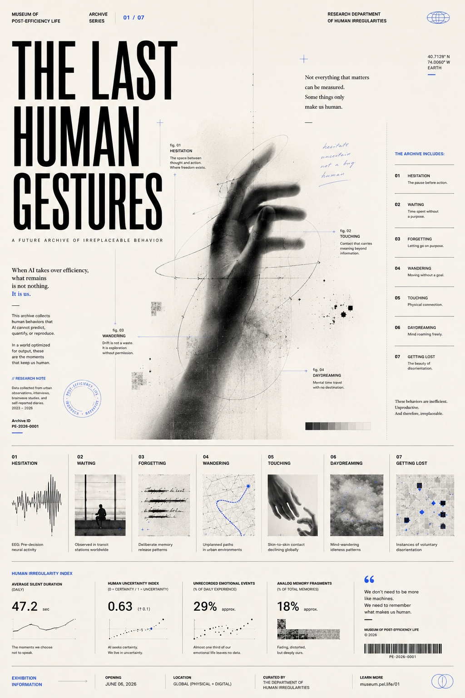
Vitruvian
2026Leonardo da Vinci's ideal human, redrawn in overlapping color layers that share one center but diverge toward the edges. One ideal gives way to many possible selves, all of them human. Made with GPT Image 2.5.
Leonardo da Vinci's search for ideal human proportions, reimagined through a body that refuses to resolve into a single form. Overlapping color layers share the same center but diverge toward the edges, replacing one ideal with many possible selves. The work asks whether there can still be a universal image of the human, or whether being human has always meant existing in variation. Made with GPT Image 2.5.
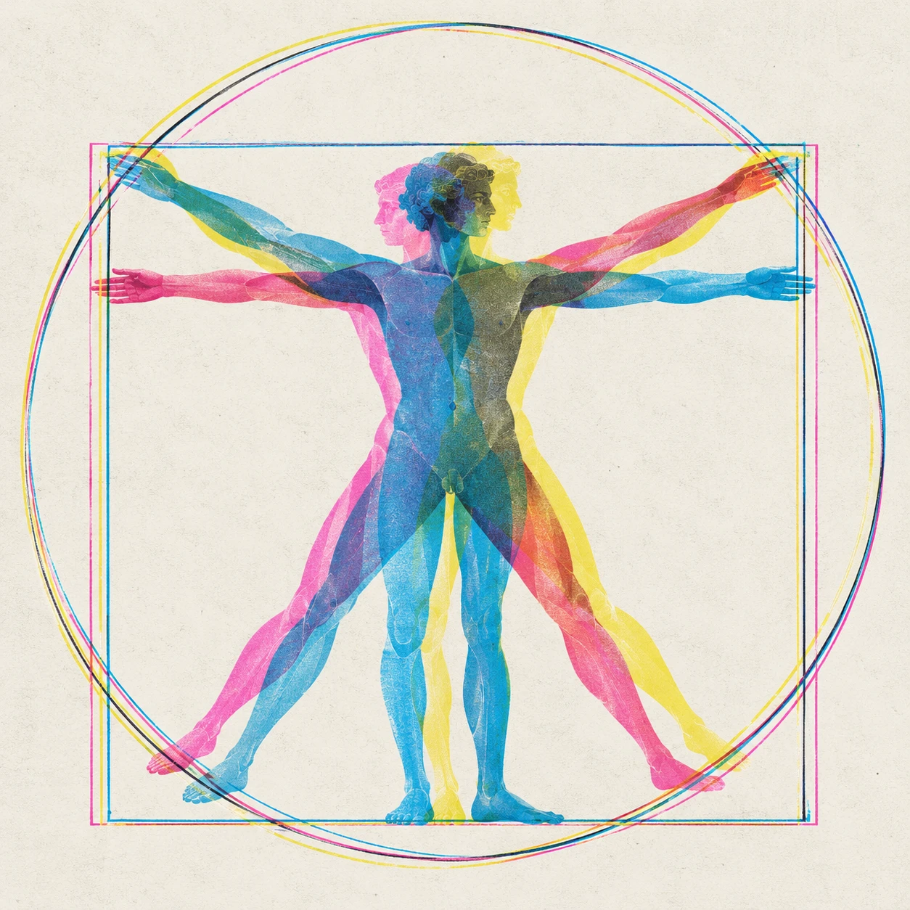
Perfect Copy
2026When improvement becomes erasure. One imperfect flower, copied and refined until it is cleaner, brighter, and less itself. Some imperfections are not defects at all, but what makes something distinct. Made with GPT Image 2.5.
What happens when improvement becomes erasure. A single imperfect flower is repeatedly copied, refined, and optimized until it becomes cleaner, brighter, and more ideal, but increasingly less itself. The work asks what progress should preserve, and whether some imperfections are not defects at all, but the very things that make something distinct. Made with GPT Image 2.5.
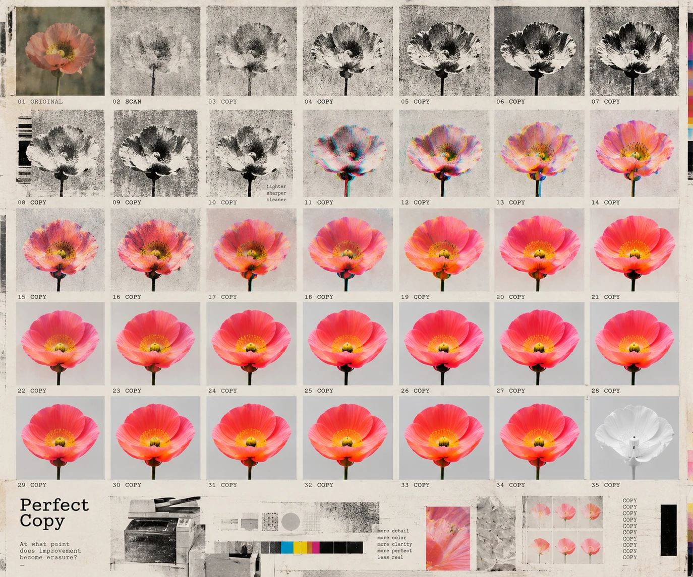
Day Drift
2026A fragrance identity built around light in motion. Refracted color, warm gradients, and restrained typography carry one visual system across bottle, packaging, print, and campaign imagery. Made with GPT Image 2.5.
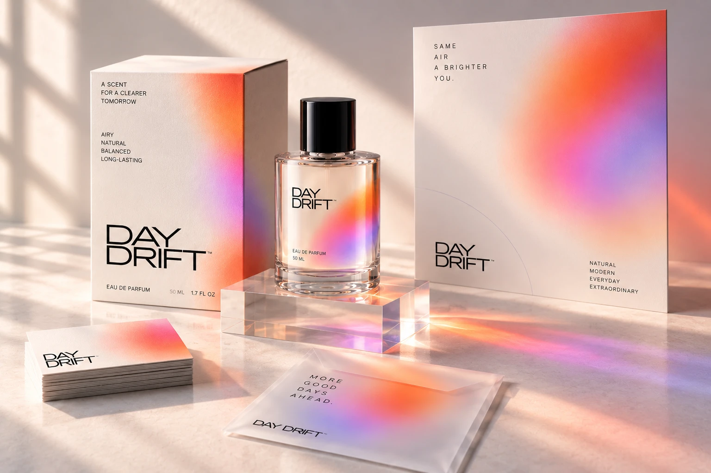
No Signal Summer
2026Future nostalgia and the quiet beauty of being unreachable. A summer when nothing was trying to reach us. Made with GPT Image 2.
A visual experiment about future nostalgia and the quiet beauty of being unreachable. What if the most peaceful memory of the future is not progress, but a summer when nothing was trying to reach us? Made with GPT Image 2.
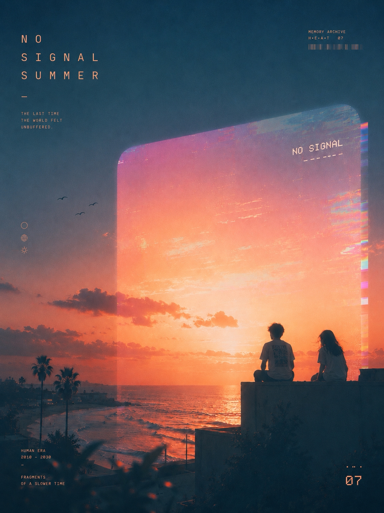
Fish Ocean
2026A predator-prey ecosystem rebuilt from an old course project, now living in a glowing ASCII terminal where fish hunt, flee, feed, and breed, and the tank cycles through boom and collapse. Made with Claude Code.
Play it here ↗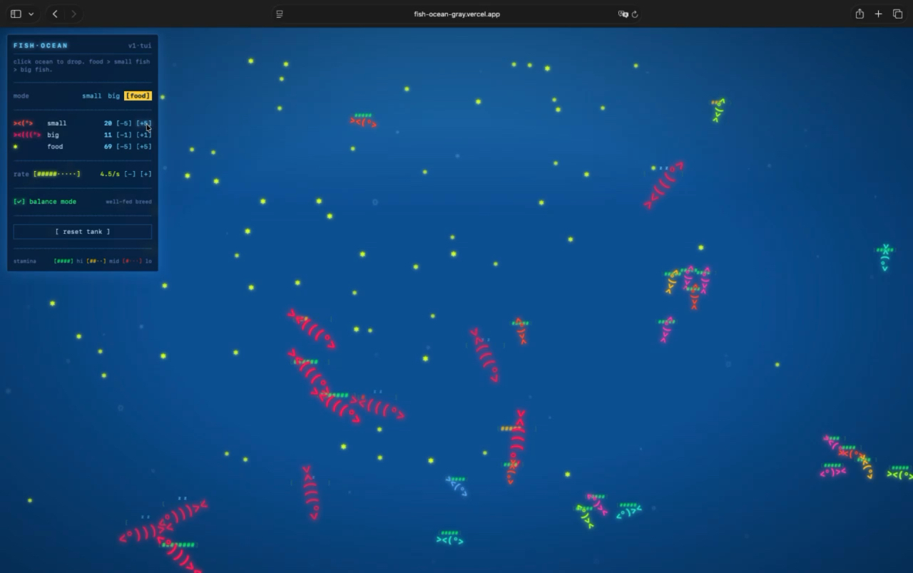
Whisper XR
2025Team project for Apple Vision Pro. An AI powered extended reality service that simulates social scenarios to help people with social anxiety prepare for real-life interactions.
A collaborative project developed by a team of two, built for Apple Vision Pro. It's an AI powered extended reality service that currently focuses on simulating social scenarios to help people with social anxiety prepare for real-life interactions. Emphasizing privacy, subtlety, and personalization, it aims to build users' confidence in a supportive, low pressure environment.


.jpg)


Futuristic Starship Cockpit
2025What immersive flight can feel like inside a browser. Steer through rotation-based controls, adjust thrust, manage onboard power systems, and engage warp while traveling through layered deep space. Made with Figma Make.
Solo project exploring what immersive flight can feel like inside a browser. Users can steer through rotation-based controls, adjust thrust, manage onboard power systems, and engage warp while traveling through layered deep space. Made with Figma Make.
Mirror
2023Fast fashion e-commerce reimagined through a sustainability lens. Size-finding tools, eco-shipping, and sustainability labels to cut returns and nudge conscious purchasing.
Solo project reimagining fast fashion e-commerce through a sustainability lens. I designed a user friendly shopping platform with size-finding tools, eco-shipping options, and sustainability labels to reduce returns and encourage conscious purchasing.
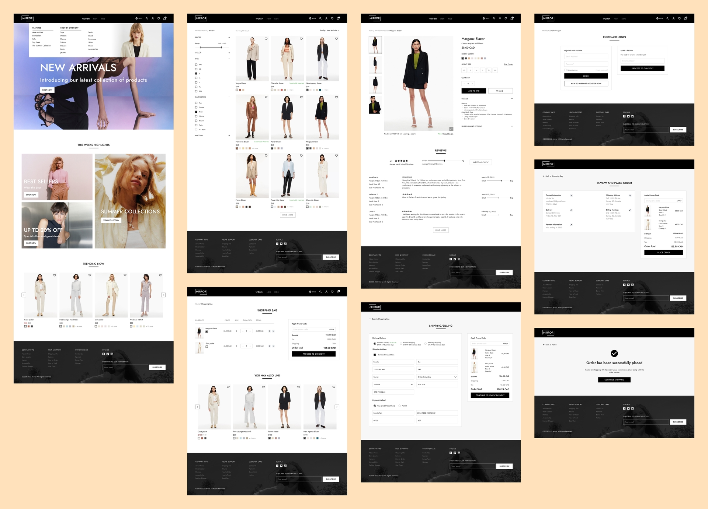
Running Dog
2020A tri-gear mechanism modeled in SolidWorks. Rotating the primary crank transfers motion to two more gears in one linked movement, and a secondary crank on the central bar converts that rotation into vertical motion through a crank pin.
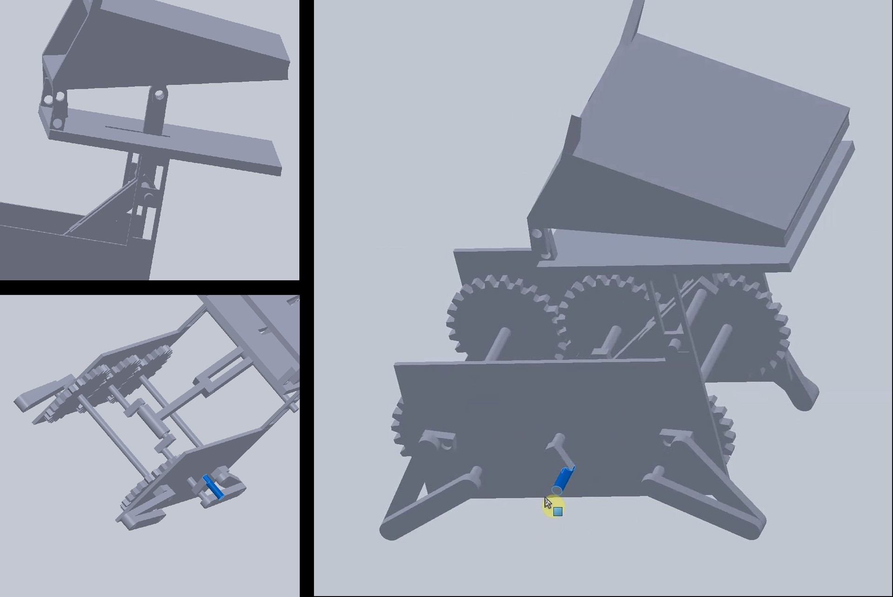
About the Teddy Bear
2020A debut 3D animated short built in Maya with a student team. As animator and scene designer, I shaped the scenes and motion for a story about responsibility and impulsive commitments, following a teddy bear left behind when a young couple parts ways.
A debut 3D animated short created by a passionate student team using Maya. As an animator and scene designer, I brought the story to life, exploring themes of responsibility and impulsive commitments through the journey of a teddy bear, symbolizing abandonment and loss as a young couple parts ways.
I Believe in a Thing Called Love
2020As an animator, I collaborated with an illustrator to create this kinetic typography project in After Effects, inspired by "I Believe in a Thing Called Love" by The Darkness, blending animation and illustration to capture its bold and expressive themes.